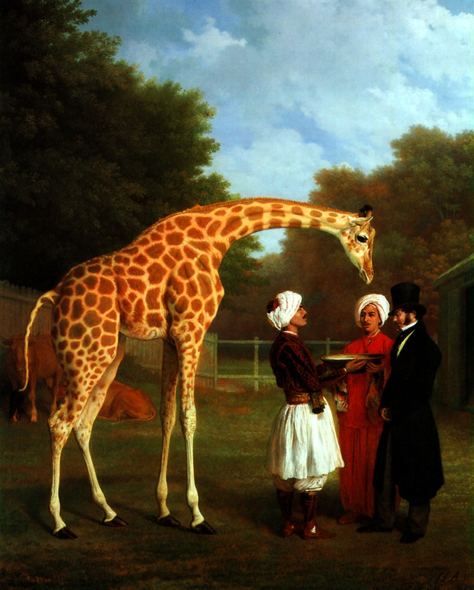

Жираф склоняет свою длинную
тонкую шею, чтобы дотянуться до
чаши, которую держат в руках
слуги-арабы. За фигурой жирафа
изображены две египетские
коровы. С развитием средств
связи в начале XIX века торговцы
получили возможность совершать
дальние путешествия, привозя
оттуда все более экзотические
товары. Богатые землевладельцы
получали от них в дар жирафов,
львов и леопардов, а Агасс,
прославившийся своей острой
наблюдательностью и вниманием к
деталям, часто получал заказы на
изображение этих зверей. За
картину Жираф и слуги Геopг IV
заплатил Агассу 200 фунтов.
Представленный на картине
джентльмен в цилиндре - это
Эдуард Кросс, хорошо известный
поставщик экзотических птиц и
зверей для королевского зверинца.
Родившийся в Швейцарии, Агасс с
1800 года жил в Англии, где
добился значительного успеха,
изображая экзотических зверей и
сцены охот. Он исполнил также ряд
конных портретов представителей
английской знати.